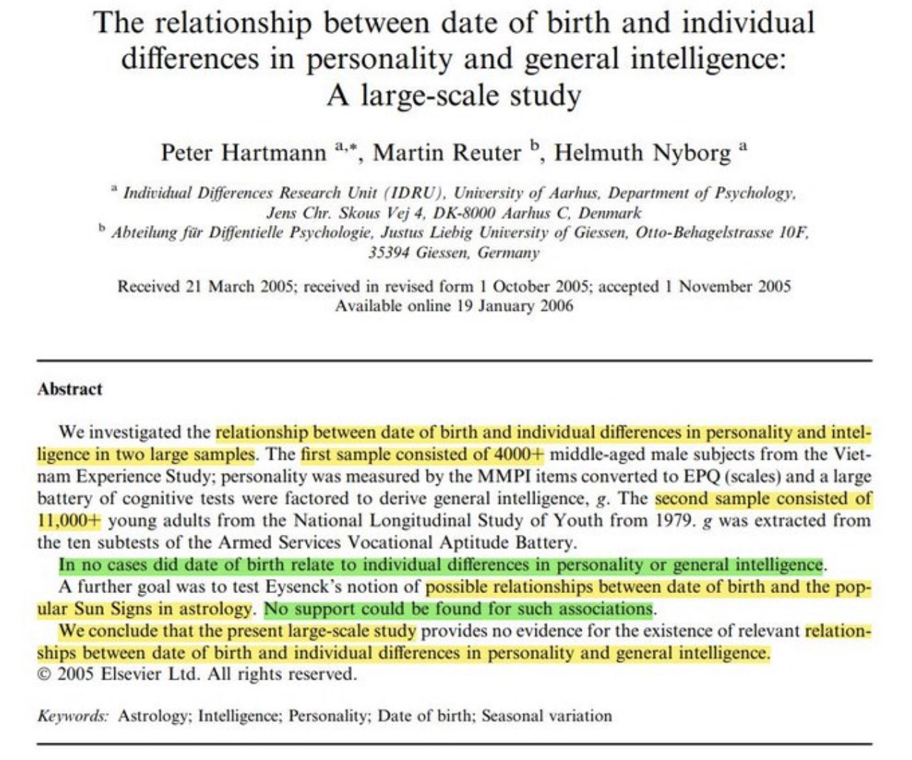
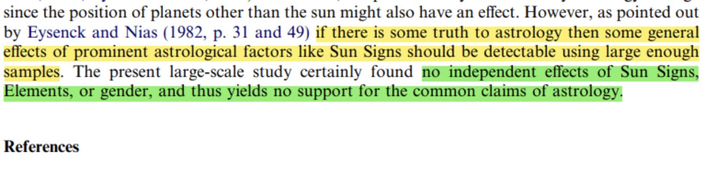
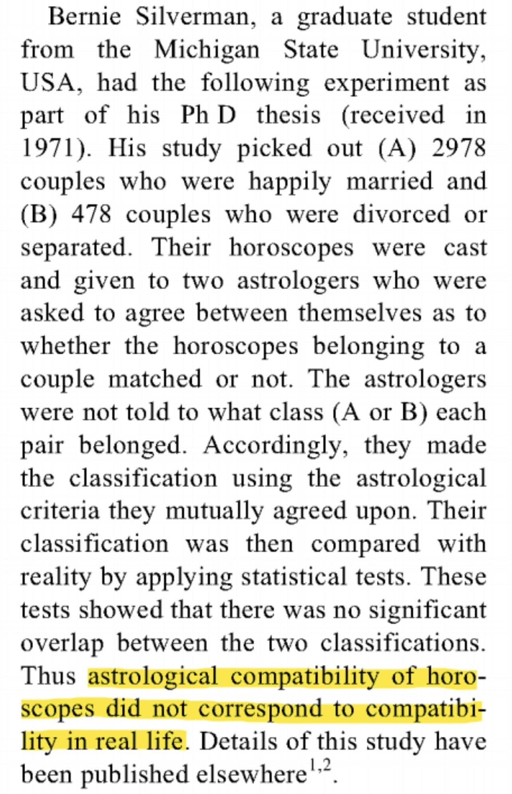
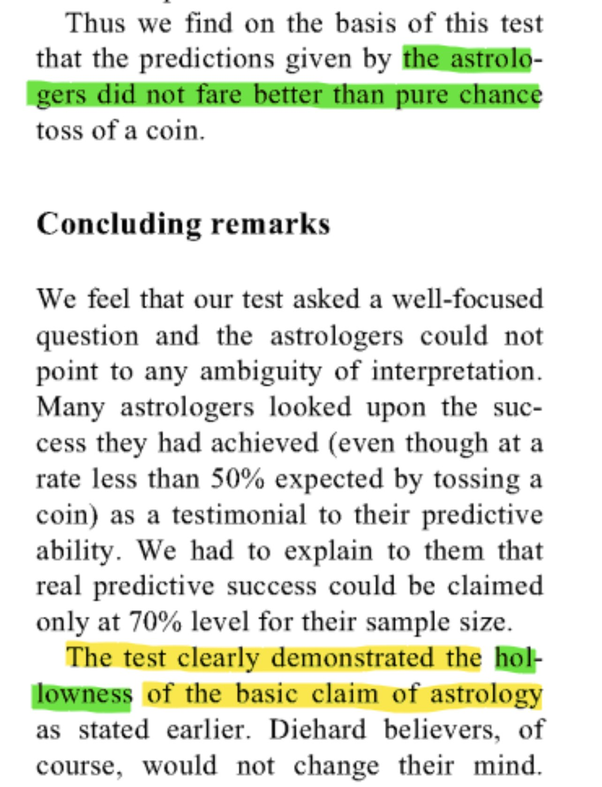
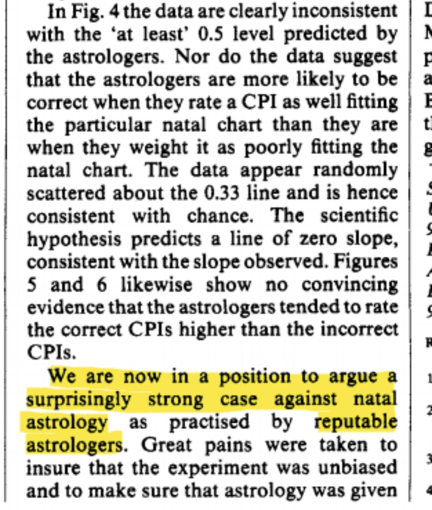
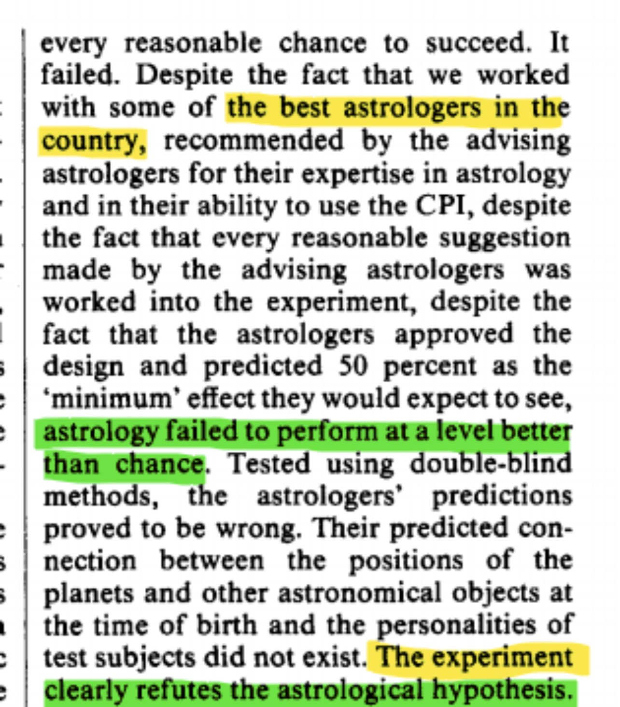
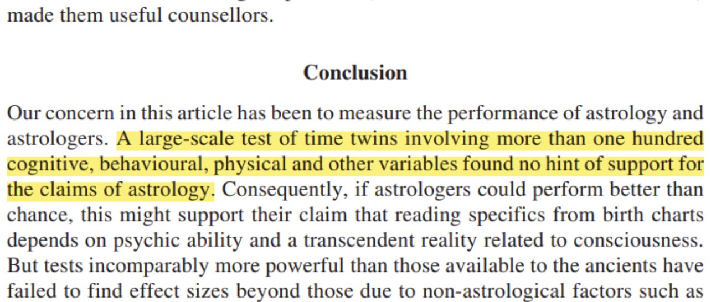

Scientifically Debunking Astrology
The Zodiac Charts are Objectively False
Constellations were devised about 2,500 years ago
And a star sign is yours because the Sun was in that constellation on the day of your birth
Due to the the Axial precession you have been looking at the wrong sign all your life.
Your actual star sign is 1 zodiac month before what you thought it was. For example if the chart says your a Gemini your actually a Taurus because the sun was in the bull constellation during your birth not the twin constellation. How can these stars affect us?
Stars have essentially no gravitational influence on us even the planets in our solar system have a infinitesimal affect the gravitational affect of stars & planets in our solar system is less than the affect a car outside which is practically none. A large-scale studies have demonstrated that there are No correlations between date of birth and personality
sciencedirect.com/science/articl…


The basic claims of astrology have been demonstrated as False
jstor.org/stable/24104554


The best astrologers in the country couldn't get more than 50% correct
nature.com/articles/31841…


Large scale tests have once again shown that there is No correlations between Time-twins & personality
Time twins are a definitive test of astrology because errors or uncertainties are avoided
ingentaconnect.com/content/imp/jc…

https://m.youtube.com/watch?v=S7G-ruj22Uo